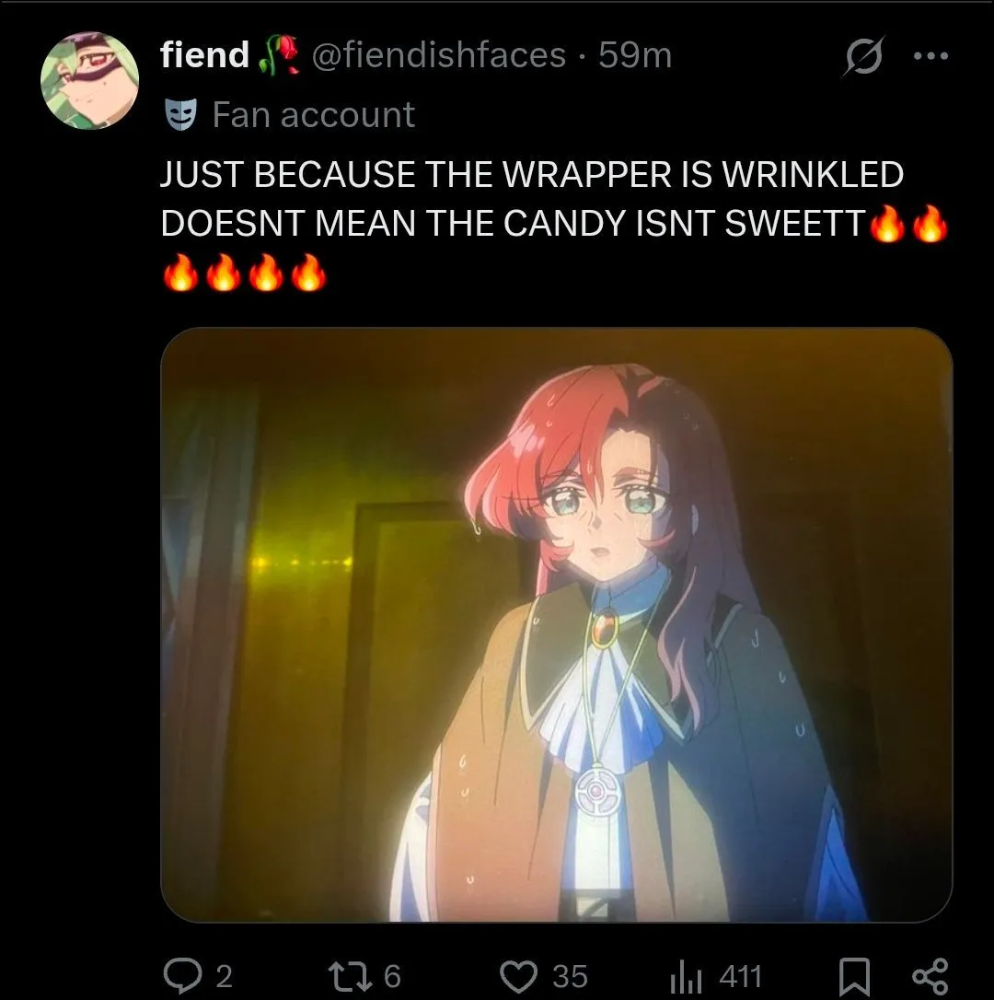
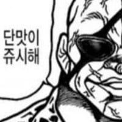
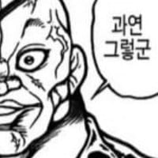

"포장지가 주름졌다고 해서 사탕이 달지 않다는 것은 아니다아아앗"

"포장지가 주름졌다고 해서 사탕이 달지 않다는 것은 아니다아아앗"
무슨캐릭?
만화라서 저정도임.. ㅅㅂ


내용물은 어찌됐든 포장지가 주름진것만 골라먹을 놈들임
사탕 유통기한 지났다
...와 문풍당당
와


ㄹㅇ 벽느낌
설명해주실 분 계십니까?
ㄱㄷ

나름 진정한 순애인가...
사람 가죽을 벗기면 고기 맛은 똑같다 그거지
아뇨아뇨아뇨
예???
사탕도 상했는데요?